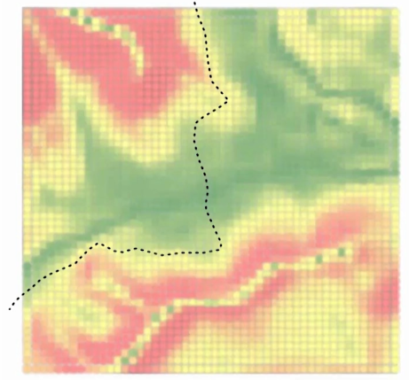

Evaluates an object such as bitmap or mesh at a specific point for a specific value.
Find relative coordinate of a point on an object such as a mesh or bitmap and get the value such as Normal-Vector or RGB-Value at position.
A grid of points can be overlaid onto a mesh of a terrain. By getting the normal of the mesh at each point position, the slope of the terrain can be evaluated.
A basemap of i.e. land uses can be evaluated at specific locations for its color. If the color matches a specific land use, the land use can be assigned to the point.